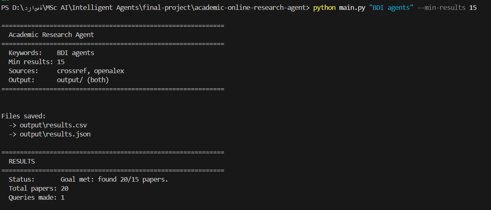

Intelligent Agents
The fifth module of my MSc AI program at the University of Essex Online
DoneModule Overview
As per the course website, "This module will look at one of the most exciting and rapidly evolving fields within computing: Intelligent Agents. Agents are software programs that can understand their environment and act in a way that helps them achieve their desired goals. They are an intelligent and innovative tool that can be deployed in a whole range of scenarios across the private and public sector."

Academic Online Research Agent
An intelligent agent that searches, retrieves, processes, and stores academic research papers from open scholarly APIs. Built using the Belief-Desire-Intention (BDI) cognitive architecture in Python.
Module Units (Click to Read)
My Overall Reflection
1. WHAT: The Module Experience
This module introduced me to the foundational theory of intelligent agents: what they are, how they reason, how they communicate, and how they are architected. The first half (Units 1 to 6) covered agent definitions, first-order logic, symbolic and reactive architectures, hybrid agents, agent communication languages (KQML/KIF), and the Belief-Desire-Intention (BDI) model. The second half (Units 7 to 12) shifted to natural language processing (NLP), deep learning, and applications. I participated in three collaborative discussions, completed formative activities on KQML dialogues and constituency parse trees, and contributed to a group project where I authored the section on BDI agent model and design decisions.
2. SO WHAT: Analysis and Emotional Response
2.1. From Receptive Learner to Critical EvaluatorThe most significant development in my thinking across this module was a shift from trusting the syllabus to critically interrogating its relevance. In Unit 1, I was pleasantly surprised that Wooldridge's (2009) textbook offered a thoughtful introduction despite its age. By Unit 4, I found myself asking questions the material did not address: where do large language models (LLM)-connected agents fit in these taxonomies? By Unit 7, my frustration surfaced openly as I noted the absence of any mention of large language models or Transformers in a module about intelligent agents in 2026. Unit 9 deepened this concern when the content revisited neural networks already covered in a previous module, with no clear connection to the module's title.
Reflecting on this using Rolfe et al.'s (2001) framework, I recognise that this critical stance was itself a form of learning. Brookfield (2017) argues that critical reflection involves questioning the assumptions embedded in educational structures, not only in the subject matter. My dissatisfaction was not mere complaint; it drove me to supplement the curriculum, reading independently about Transformers, creating a public NLP practice repository on GitHub, and writing a research article in Unit 10 that explicitly bridged BDI architecture with LLM-based agentic loops, connecting the module's classical theory to the contemporary AI landscape.
2.2. Bridging Modules and Building Conceptual ContinuityA recurring pattern in my reflections was the impulse to connect this module's content with prior learning. When first-order logic appeared in Unit 2, I linked it to my Knowledge Representation and Reasoning (KRR) module. More substantively, a peer's mention of multi-agent system unpredictability prompted me to independently research whether ontologies could serve as guardrails for multi-agent systems, an idea rooted in my KRR work. I found relevant research by Zaki et al. (2021) on ontology-based self-certification and by Felicíssimo et al. (2005) on normative ontologies for open multi-agent systems, and brought these into the discussion.
By Unit 5, I was comparing the Correspondence Inclusion Dialogue (CID) protocol with the modern Agent-to-Agent (A2A) protocol, asking whether their integration represented a research gap or an outdated question. This cross-pollination, linking formal logic, ontologies, agent communication, and modern protocols, became, I believe, one of the most productive aspects of my learning in this module.
2.3. From Theory to Practice: Formative Activities and Independent ResearchThe formative activities gave me the opportunity to apply theoretical concepts directly. The KQML/KIF dialogue in Unit 6, in which I constructed a four-message exchange between two agents negotiating warehouse stock queries, required me to think carefully about performatives, shared ontologies, and message linking. It was one thing to read about KQML; it was another to decide whether to use "ask-one" or "ask-all" and to reason about why an explicit ontology reference matters for consistent interpretation.
The constituency parse tree activity in Unit 8 pushed me to engage hands-on with NLP tools. I used Stanza for neural parsing, converted its output to NLTK tree objects, and rendered SVG visualisations using svgling. The structural ambiguity example, where the prepositional phrase "with the telescope" could attach to either the verb or the noun, made the theoretical concept tangible. I published the full practice notebook on a new GitHub repository intended for continued NLP learning.
Most significantly, the research article I wrote in Unit 10 on deep learning in creative writing became the point where the module's threads converged. I argued that an LLM embedded in an agentic loop begins to resemble a BDI architecture (Rao and Georgeff, 1995), a structural parallel with the agent models studied earlier in the module (Wooldridge, 2009). This allowed me to connect classical agent theory with contemporary questions of authorship, copyright, and the homogenisation of creative voice (O'Sullivan, 2025).
2.4. The Philosophical ThreadThroughout the module, I found myself drawn to the philosophical dimensions of the material: Dennett's intentional stance in Unit 1, the Sapir-Whorf hypothesis in Unit 2, Searle's Speech Acts in Unit 5, and questions of authorship and agency in Unit 10. This reflects a genuine intellectual orientation toward the space where language, logic, and meaning intersect, one that I intend to carry into future research on AI and creative industries, where questions of what constitutes "creation" and "authorship" are increasingly urgent (Sternberg, 2024; Ding and Li, 2025).
3. NOW WHAT: Learning and Changed Actions
This module has consolidated three things for me. First, it grounded me in the classical foundations, including BDI, KQML, reactive and hybrid architectures, that remain structurally relevant even as the technology stack has changed, making me better equipped to critically evaluate modern agent frameworks.
Second, finding the curriculum insufficient pushed me to develop a habit of self-directed supplementation. The NLP practice repository, the independent research on ontology-based agent governance, and the Unit 10 research article were all products of this habit, and they now form part of my portfolio as evidence of initiative beyond the syllabus.
Third, this module sharpened my research direction. My interest in the intersection of AI and creative practices, which surfaced in Unit 5 with the art translation MAS paper, became central in Units 9 to 11 through the collaborative discussion on GenAI and creativity, and culminated in the research article on deep learning in creative writing, is now a clearly defined area I intend to pursue after this degree.
Reference List
Brookfield, S.D. (2017) Becoming a Critically Reflective Teacher. 2nd edn. San Francisco: Jossey-Bass.
Ding, A.W. and Li, S. (2025) 'Generative AI lacks the human creativity to achieve scientific discovery from scratch', Scientific Reports, 15(1). Available at: https://doi.org/10.1038/s41598-025-93794-9 (Accessed: 15 April 2026).
Felicíssimo, C. et al. (2005) 'Normative Ontologies to Define Regulations over Roles in Open Multi-Agent Systems', in AAAI 2005 Fall Symposium on Roles, an Interdisciplinary Perspective. Menlo Park, CA: AAAI Press. Available at: https://cdn.aaai.org/Symposia/Fall/2005/FS-05-08/FS05-08-011.pdf (Accessed: 6 February 2026).
O'Sullivan, J. (2025) 'Stylometric comparisons of human versus AI-generated creative writing', Humanities and Social Sciences Communications, 12. Available at: https://doi.org/10.1057/s41599-025-05986-3 (Accessed: 15 April 2026).
Rao, A.S. and Georgeff, M.P. (1995) 'BDI agents: from theory to practice', in Proceedings of the First International Conference on Multiagent Systems (ICMAS-95). San Francisco, CA, pp. 312-319.
Rolfe, G., Freshwater, D. and Jasper, M. (2001) Critical Reflection in Nursing and the Helping Professions: A User's Guide. Basingstoke: Palgrave Macmillan.
Sternberg, R.J. (2024) 'Do Not Worry That Generative AI May Compromise Human Creativity or Intelligence in the Future: It Already Has', Journal of Intelligence, 12(7), p. 69. Available at: https://doi.org/10.3390/jintelligence12070069 (Accessed: 15 April 2026).
Wooldridge, M. (2009) An Introduction to MultiAgent Systems. 2nd edn. Chichester: John Wiley & Sons.
Zaki, O. et al. (2021) 'Reliability and Safety of Autonomous Systems Based on Semantic Modelling for Self-Certification', Robotics, 10(1), p. 10. Available at: https://doi.org/10.3390/robotics10010010 (Accessed: 6 February 2026).